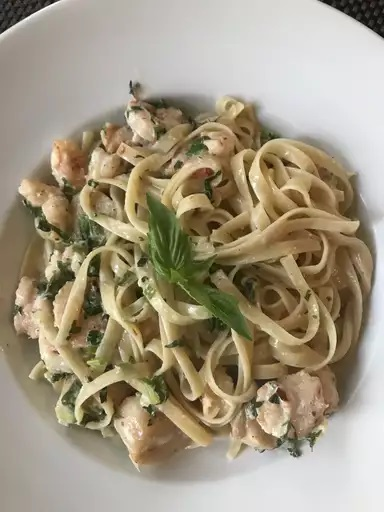

Cajun Spaghetti

Description
This Cajun spaghetti features a spicy sauce with shrimp served over a plate of pasta. Add as much or as little heat as you can stand!
Ingredients
- ½ cup vegetable oil
- 8 ounces tomato sauce
- 1 ¼ cups water
- ¼ teaspoon dried basil
- 1 teaspoon ground black pepper
- 1 teaspoon crushed red pepper flakes (Optional)
- 1 teaspoon salt
- 1 pound small shrimp, peeled and deveined
- 2 tablespoons vegetable oil
- 1 green bell pepper, chopped
- 1 red bell pepper, chopped
- ½ onion, chopped
- 3 cloves garlic, minced
- 2 teaspoons cornstarch
- 2 tablespoons cold water
- 12 ounces spaghetti
- 8 green onions, minced
Steps
- Mix 1/2 cup oil, tomato sauce, 1 1/4 cups water, basil, 1/2 teaspoon black pepper, 1/2 teaspoon crushed red pepper flakes, and 1/2 teaspoon salt in a 4- to 6-quart pot over medium heat. Bring to a boil, then reduce heat to medium-low; stir occasionally.
- Meanwhile, season shrimp with 1/2 teaspoon salt, 1/2 teaspoon black pepper, and 1/2 teaspoon crushed red pepper flakes; mix thoroughly and set aside.
- Warm 2 tablespoons oil in a medium saucepan over medium-high heat. Add green bell pepper, red bell pepper, onion, and garlic. Cook and stir until slightly softened, 3 to 5 minutes.
- Add vegetables to tomato sauce and cook over medium heat for 3 minutes. Reduce heat to low and cook, stirring occasionally, for 20 to 25 minutes.
- When sauce has 7 to 10 minutes to cook until completion, add seasoned shrimp to sauce; mix well. Bring heat to medium and stir occasionally.
- Mix cornstarch and 2 tablespoons cold water in a small bowl; add mixture to sauce when sauce has 2 minutes left until completion and mix well.
- Bring a large pot of lightly salted water to a boil. Add pasta and cook until al dente, 8 to 10 minutes; drain and place in a serving bowl.
- Pour sauce over pasta and sprinkle with green onions.